infinity-lab — showcase gallery
Rendered figures and animations from two mathematics projects: Gojo Satoru’s Infinity through four lenses, and the Central Finite Curve as a real zero set on a Möbius strip. Everything below is self-contained and opens offline.
Gojo’s Infinity
Four independent mathematical lenses interrogate the same barrier and reach four different verdicts — the disagreement is the point.
Lens 1 — Geometric series (Zeno)
Verdict FRAGILE: the halving series converges and the attacker arrives.

Lens 1 — geometric series converges
The Zeno partial sums Sn = 1 − (1/2)n climbing toward the dashed line S = 1, with the residual (1/2)n > 0 shrinking but never reaching zero. The full geometric sum a/(1−r) with a = r = 1/2 equals exactly 1, and the arrival time is finite: the attacker arrives. Verdict: FRAGILE.
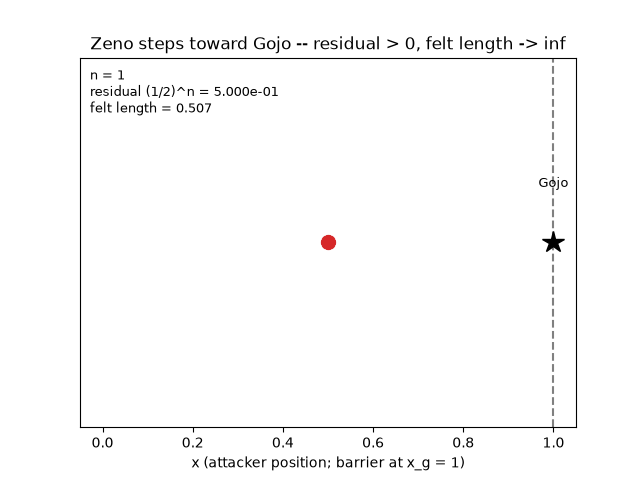
Lens 1/3 — the attacker never arrives (GIF)
The Zeno steps xn = 1 − (1/2)n marching toward Gojo. The residual (1/2)n > 0 stays strictly positive at every finite step while the felt length diverges — the tension between the FRAGILE (series) and FORMIDABLE (metric) readings made visible.
Lens 2 — Lebesgue measure
Verdict FRAGILE: the barrier is a countable null set, m(Z) = 0.

Lens 2 — Lebesgue covering
The measure-theoretic covering of the barrier Z = {1 − 1/2n}: each point zn is boxed by an interval of length ε/2n, so the total cover length telescopes to exactly ε. Since ε is arbitrary, the infimum is 0 and m(Z) = 0: countably many points of total length zero. Verdict: FRAGILE (null set).
Lens 3 — Riemannian conformal metric
Verdict FORMIDABLE: the felt geodesic length to the barrier diverges.

Lens 3 — conformal metric blow-up
The one-dimensional conformal factor Ω(x) and the induced metric g = Ω(x)² plotted as the attacker’s coordinate approaches Gojo at x = 1. Far away g ≈ 1, so a physical step feels like itself; near Gojo the same step is stretched without bound. ds² = Σ gij dxi dxj, with Ω(x) = 1 + λ·exp(−(xg−x)²/σ²)/(xg−x). Verdict: FORMIDABLE.
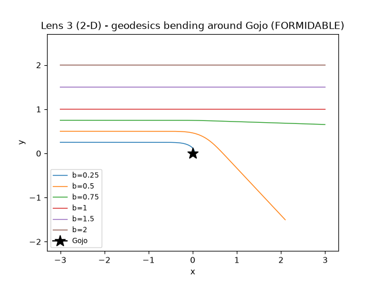
Lens 3 (2-D) — geodesic bundle
A bundle of true geodesics on the 2-D conformally-flat manifold gij = Ω² δij (Gojo at the origin), integrated with an RK4 solver. Each ray bends inward as it nears Gojo, the metric’s light-bending analogue, yet the felt path length keeps growing. Verdict: FORMIDABLE.

Lens 3 (2-D) — felt length diverges
The felt (Riemannian) length required to reach within δ of Gojo, plotted against δ → 0. Each decade of approach adds roughly λ·ln 10, so the improper integral L = ∫ Ω dx diverges: no finite felt distance reaches the barrier. Verdict: FORMIDABLE.
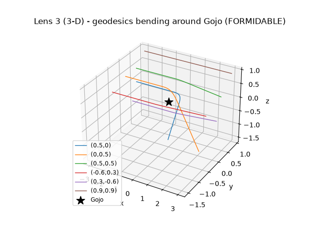
Lens 3 (3-D) — geodesics in R³
The same conformal construction lifted to three dimensions (ConformalMetricND): a bundle of geodesics travelling in +x and bending toward Gojo at the origin. One code path serves 1-D, 2-D and 3-D; here it verifies planarity, affine-energy conservation and radial parity with the 1-D lens. Verdict: FORMIDABLE.
Lens 3 — Approach & rotating animations
The approach never completes; the rotating views show the 3-D bending.
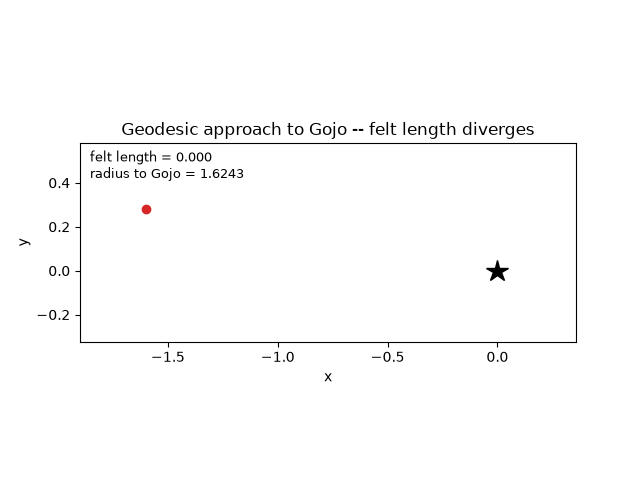
Lens 3 — approach animation (GIF)
An animated geodesic bending around Gojo and slowing as its accumulated felt length climbs — it approaches forever but never arrives. The Euclidean gap shrinks while ∫ Ω dx grows without bound. Verdict: FORMIDABLE.
Lens 3 — approach animation (MP4)
The same approaching-geodesic scene re-encoded to MP4 via ffmpeg: the ray asymptotically nears Gojo as its felt Riemannian length diverges. Verdict: FORMIDABLE.
gojo_geodesic_approach.mp4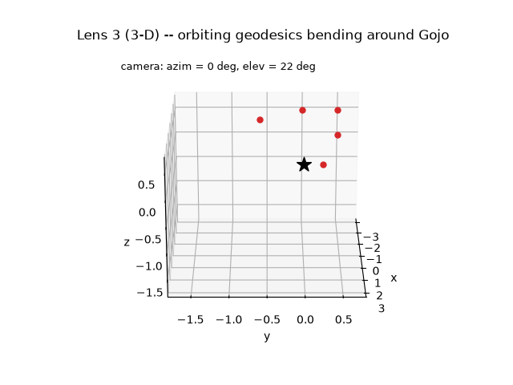
Lens 3 (3-D) — rotating geodesics (GIF)
A few geodesics bending around Gojo in R³ while the camera orbits the scene (azimuth advances and elevation sweeps each frame). The 3-D generalisation of the metric’s inward light-bending. Verdict: FORMIDABLE.
Lens 3 (3-D) — rotating geodesics (MP4)
The rotating 3-D geodesic bundle re-encoded to MP4 via ffmpeg — an orbiting view of rays curving toward Gojo at the origin. Verdict: FORMIDABLE.
gojo_geodesic_3d_rotating.mp4The four-lens verdict
Fragile / Fragile / Formidable / Falls — the same barrier judged by four different mathematics.
| Lens | Model | Verdict | Why |
|---|---|---|---|
| 1 | Geometric series / Zeno | Fragile | Sn = 1 − (1/2)n → 1 exactly; arrival time is finite. The attacker arrives. |
| 2 | Lebesgue measure | Fragile | The cover of Z = {1 − 1/2n} telescopes to ε; infimum → 0, so m(Z) = 0 (null set). |
| 3 | Riemannian conformal geometry | Formidable | The felt geodesic ∫ Ω dx to the barrier is an improper integral that diverges (= ∞). |
| 4 | Topology / World-Cutting Slash | Falls | Severing the continuity of Ω at a point leaves the metric undefined; the domain splits into exactly 2 components. |
Honest caveats
- The Möbius strip is a ruled surface, so its Gaussian
curvature is strictly negative (
K < 0) on the interior — the weighting byKis what makesKRickshare its zero set withR, nothing more. - Gojo’s Infinity is only fragile at true infinity: every
finite Zeno residual
(1/2)n > 0is strictly positive, and the FORMIDABLE reading depends on an improper integral that only diverges in the limit. - Applying real analysis to a fictional universe has limits: ‘cursed energy’ and authorial intent are not governed by real analysis. These models illuminate the idea of Infinity — they do not govern it.
Möbius-Rickness — the Central Finite Curve
The Rick & Morty ‘Central Finite Curve’ realised as a real zero set R−1(0) on a Möbius strip of strictly negative Gaussian curvature.
Strip & curve
The ruled Möbius strip and the traced zero set R−1(0).

Central Finite Curve — strip + zero set
The Möbius strip (a ruled surface, hence strictly negative Gaussian curvature K < 0 on its interior) with the traced Central Finite Curve R−1(0) overlaid. Because K never vanishes, the weighted field KRick = K·R is zero exactly where R = 0, so this red locus separates ‘Rick-positive’ from ‘Rick-negative’ universes on the band. Reading 1: the zero set R−1(0).
K·R heatmap
The weighted field KRick = K·R with its zero contour.

Central Finite Curve — K·R heatmap
A heatmap of the weighted field KRick(u,v) = K(u,v)·R(u,v) in (u,v) parameter space with the zero contour drawn on top. Since K < 0 strictly (worst K = −0.055927), the sign changes of KRick come entirely from R, and the contour is the Central Finite Curve.
SCMS ridge
The second Central Finite Curve reading: the SCMS / Eberly ridge.

Central Finite Curve — SCMS ridge
The Möbius surface with the SCMS / Eberly height-ridge of maximal Rickness overlaid — the second, independent formalization of the Central Finite Curve. Where reading 1 solves R−1(0) exactly, this ridge follows the crest of the field as a principal-curvature ridge. Reading 2: the SCMS ridge.
Rotating animations
An orbiting view carrying both Central Finite Curve readings together.
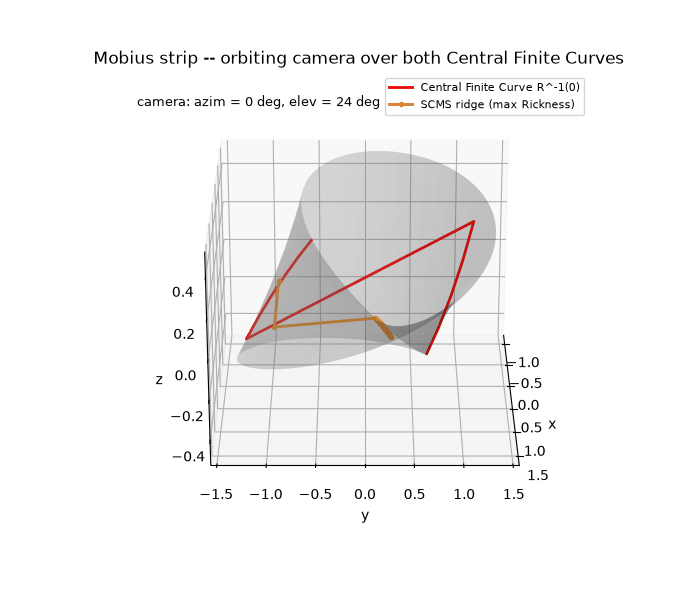
Central Finite Curve — rotating strip (GIF)
An orbiting camera over the semi-transparent Möbius strip, overlaying both Central Finite Curve readings at once: the exact zero set R−1(0) (red) and the SCMS ridge (orange). The two readings track the same feature from different mathematics.
Central Finite Curve — rotating strip (MP4)
The rotating Möbius scene re-encoded to MP4 via ffmpeg, showing the zero set R−1(0) and the SCMS ridge together under an orbiting view.
Two Central Finite Curve readings
The same feature located two independent ways.
Reading 1 — the zero set R−1(0)
Because the Möbius strip is ruled, K < 0 strictly, so
KRick = K·R = 0 ⇔ R = 0. Solving
R(u,v) = 0 gives the Central Finite Curve exactly as a 1-D locus
— the red curve in the strip and heatmap figures.
Reading 2 — the SCMS / Eberly ridge
An independent formalization follows the crest of the Rickness field as a principal-curvature (height) ridge via Subspace-Constrained Mean Shift. It traces the same feature from different mathematics — the orange ridge in the ridge and rotating figures.
Central Finite Curve (engine)
The central_finite_curve engine’s Rickness ridge / near-maximal band traced over a simulated multiverse.
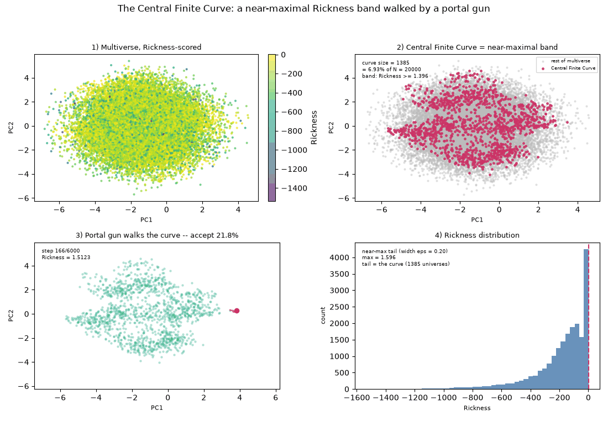
Central Finite Curve Four Panels
Auto-discovered artifact embedded so nothing is dropped. Add an entry to build_gallery.py for a curated caption.
Central Finite Curve Four Panels
Auto-discovered artifact embedded so nothing is dropped. Add an entry to build_gallery.py for a curated caption.
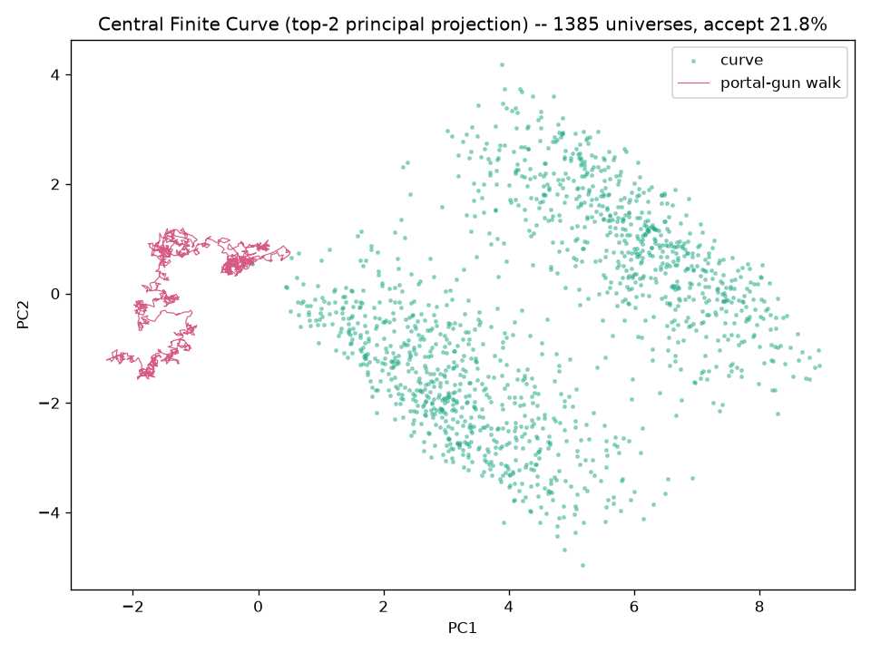
Rickness engine — ridge projection
A flattened projection of the central_finite_curve engine: the Rickness ridge — the crest of near-maximal Rickness — traced across a simulated multiverse and projected to the plane. The highlighted band marks where the field sits within a near-maximal tolerance of its ridge, the engine’s notion of ‘the one arc of realities where a Rick exists.’

Central Finite Curve Rotating 3D
Auto-discovered artifact embedded so nothing is dropped. Add an entry to build_gallery.py for a curated caption.
Central Finite Curve Rotating 3D
Auto-discovered artifact embedded so nothing is dropped. Add an entry to build_gallery.py for a curated caption.
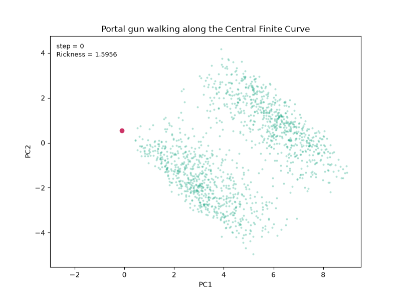
Rickness engine — ridge walk (GIF)
An animated walk stepping along the Central Finite Curve as the engine follows the Rickness ridge / near-maximal band across the simulated multiverse, one reality at a time. The path stays pinned to the crest of the field rather than crossing it.
central_finite_curve_walk.gifRickness engine — ridge walk (MP4)
The same ridge-walk re-encoded to MP4 via ffmpeg: the engine advances along the near-maximal Rickness band of the simulated multiverse, tracing the Central Finite Curve step by step.
central_finite_curve_walk.mp4Other artifacts
Auto-discovered files that are not part of a known group — embedded so nothing is dropped.
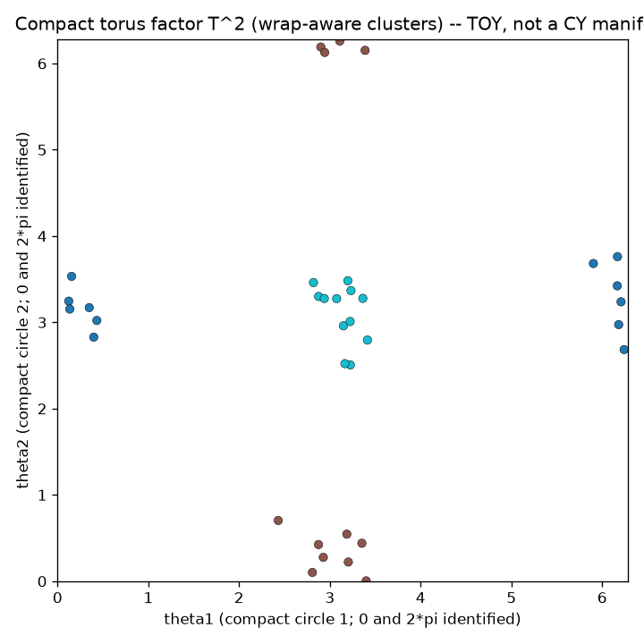
Calabi Yau Latent Torus
Auto-discovered artifact embedded so nothing is dropped. Add an entry to build_gallery.py for a curated caption.

Divergence Meter Worldlines
Auto-discovered artifact embedded so nothing is dropped. Add an entry to build_gallery.py for a curated caption.
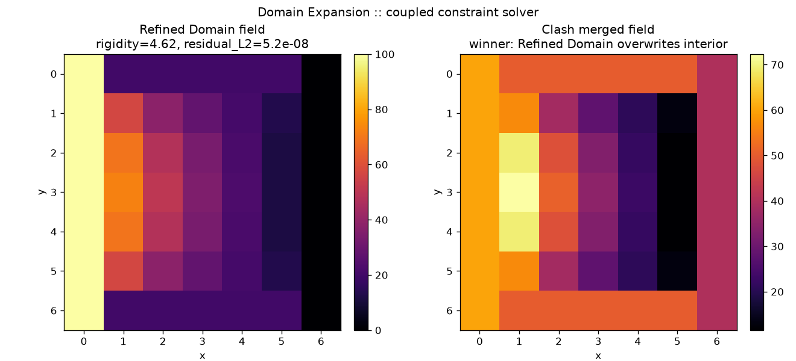
Domain Expansion Field
Auto-discovered artifact embedded so nothing is dropped. Add an entry to build_gallery.py for a curated caption.
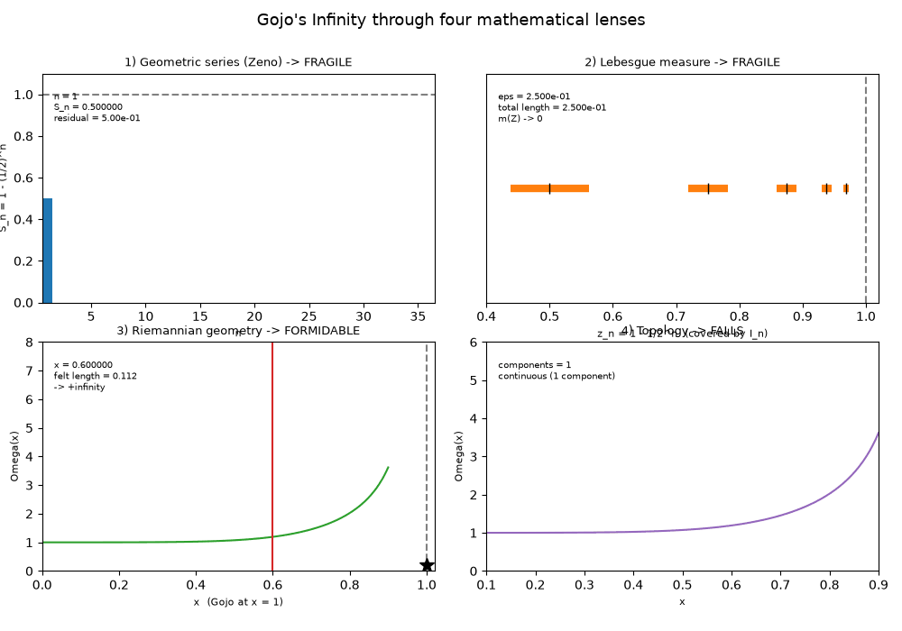
Gojo Four Lenses
Auto-discovered artifact embedded so nothing is dropped. Add an entry to build_gallery.py for a curated caption.
Gojo Four Lenses
Auto-discovered artifact embedded so nothing is dropped. Add an entry to build_gallery.py for a curated caption.

Madoka Entropy Entropy
Auto-discovered artifact embedded so nothing is dropped. Add an entry to build_gallery.py for a curated caption.
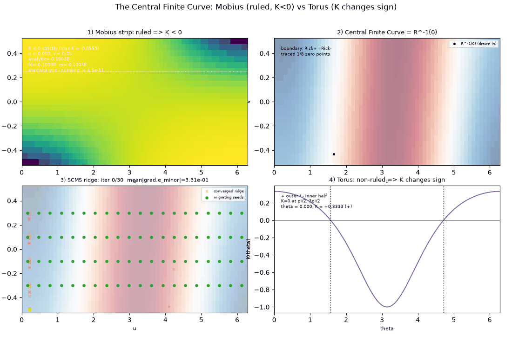
Mobius Four Panels
Auto-discovered artifact embedded so nothing is dropped. Add an entry to build_gallery.py for a curated caption.
Mobius Four Panels
Auto-discovered artifact embedded so nothing is dropped. Add an entry to build_gallery.py for a curated caption.
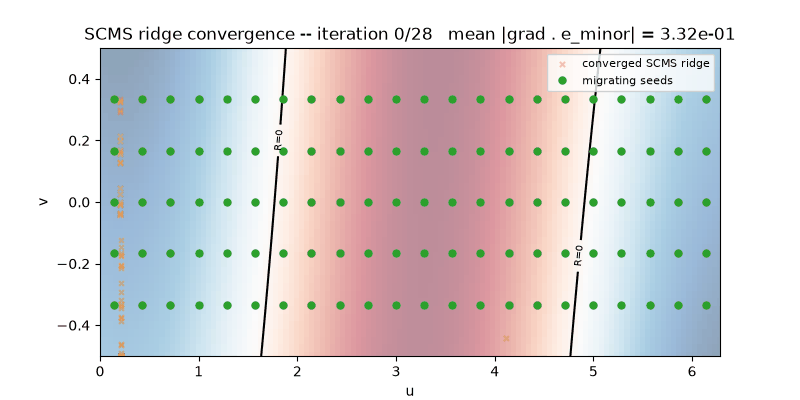
Mobius Ridge Convergence
Auto-discovered artifact embedded so nothing is dropped. Add an entry to build_gallery.py for a curated caption.
Mobius Ridge Convergence
Auto-discovered artifact embedded so nothing is dropped. Add an entry to build_gallery.py for a curated caption.

Padic Embeddings Distance Matrix
Auto-discovered artifact embedded so nothing is dropped. Add an entry to build_gallery.py for a curated caption.

Poster
Auto-discovered artifact embedded so nothing is dropped. Add an entry to build_gallery.py for a curated caption.
Attribution
- The mathematical framing showcased here is after Achmad Roykhan Sabiq, “Mathematics Behind Jujutsu Kaisen: Gojo Satoru’s Infinity”, Oxford University Mathematics Essay Competition 2026. Original PDF: tomrocksmaths.com.
- This gallery is an original summary/companion — captions are written in our own words and do not reproduce the essay’s prose. See docs/essay-source.md for the section-by-section companion and source mapping.
- Jujutsu Kaisen and its characters are © Gege Akutami / Shueisha; Rick & Morty is © its respective rights holders.